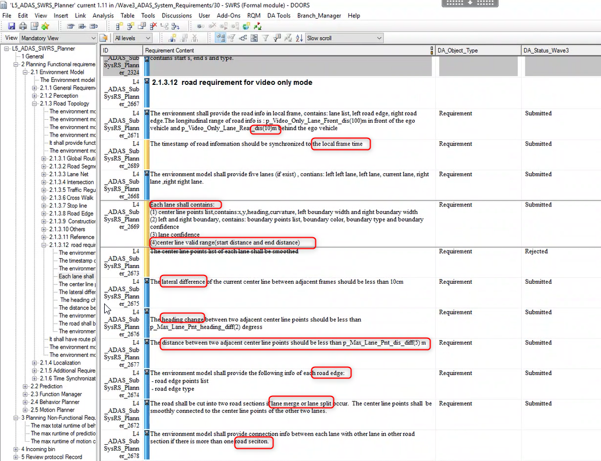
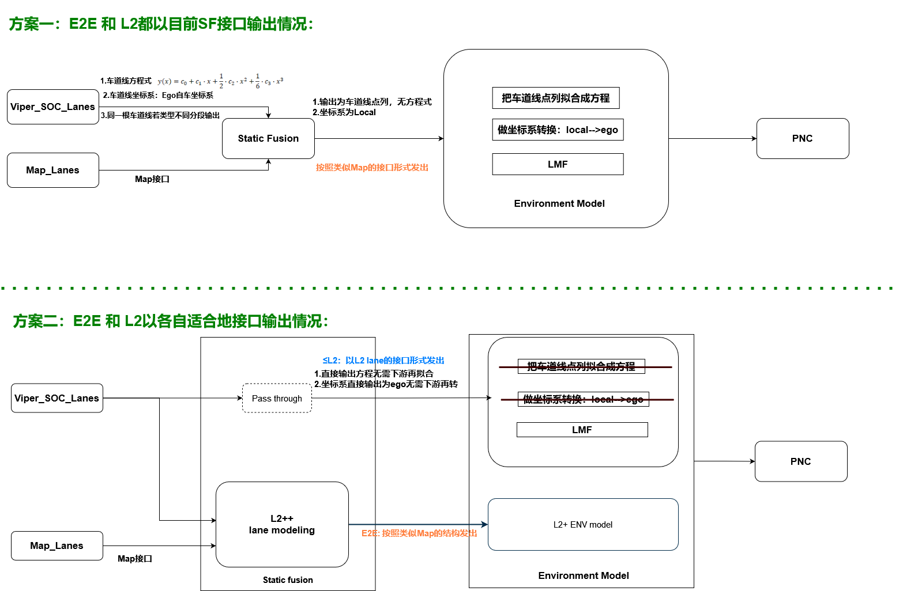
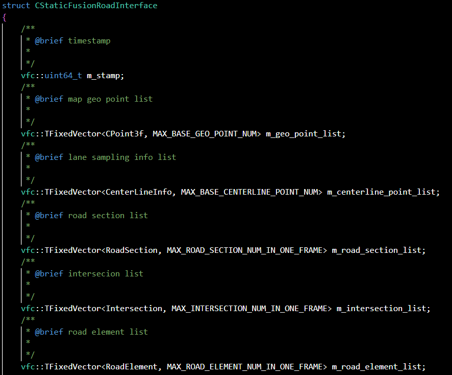
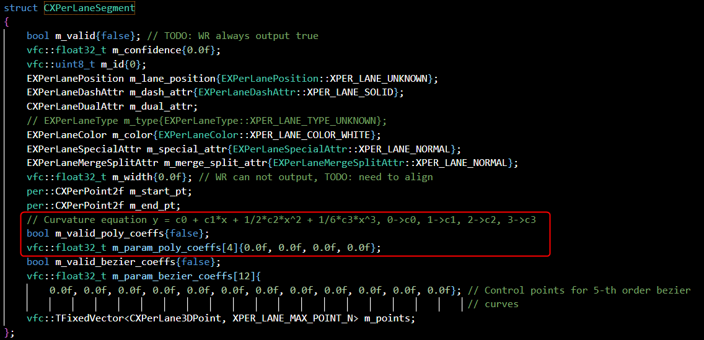

Viper only lane Requirements created in June
Background：
Initially, Lane Model's design was designed to complete the high -end L2 ++ E2E function, that is, it provided a more robust and more information lane line model that fixed MAP+VIPER. Therefore, we use interfaces similar to HDMAP format as SF final output.
Because it is needed in PI2306, it is said that in addition to doing the function of E2E, it is also necessary to support ordinary L2 functions, that is, when MAP is invalid, the interface of Viper only separately is output.
This has a problem: how to better output the information of Viper only?
The following analysis:
Requirement Analysis from downstream：
Orignal file

Sub-req Summary：
What SF sees is the income, try to spread the real environmental information as much as possible, instead of not knowing the situation of the back -end behavior.
Coordinates: EGO → Local
Output lane line range: -10m ~ 100m
-10 depends on viper input (Viper use Rear camera)
Output 5 lanes, 6 car lines
depends on viper input
The confidence of the output lane (not for the time being)
new dev. for viper only,
Output LANE BORDER's points, color, type, confidence
new dev. for viper only
Output center line (x, y)
only viper lane just transfer points(x,y), other attributes need calculate in ENV.
The output center line (Heading Angle, Curvature, the width from the center line to the left and right borders)
new dev. for viper only
The valid range of the output center line (the effective range of the central line, or the effective range of Lane Border DX_START, DX_END?)?
new dev. for viper only
The horizontal difference between the central line of the adjacent frame should be less than 10cm (KPI)
negotiate, tbd
The two points of the adjacent center line Heading Change should be less than 2 ° (KPI)
sample interval constraint, tbd
The two points of the adjacent center line should be less than 5m (KPI)
bandwidth constraint, tbd
The point and type of the output Road Edge
conversion work
If lane occurs, Merge or SPILT, cutsession
depends on viper input
If you exceed one RoadSection, you need to provide a connection relationship of LANE in different sections
depends on viper input
new dev. task
Analysis Diagram
Scheme 1: L2+ E2E and L2 use a set of interfaces
That is, the L2 interface is converted to the L2+ E2E interface to the downstream
Scheme 2: L2+ E2E interface and L2 interface each use your own interface with your own suitable interface
The introduction of the two schemes is as shown below:

Specific Interface
SF currently output interface:

SOC_VIPER_LANE interface:

Agenda
PI2306 Feature Development & Compilation & Parking 5/1 ~ 6/30
Parking Lane Model first got on the car (orin)
Driving Lane Model first got on the car (orin)
traffic light review & upgrade (depends on WR viper & NI map)
Demand discussions and clarification. 5/25
Double -line representation: HDMAP (SINGLE LINE) and Viper (Two Lines)
KPI
Analysis and conversion scheme design of VIPER and Lane Model interface 5/30
Viper only lane code development 6/15
PI2306 Lane Model joint
Viper only lane code debugging and verification 6/30 (RISK)
Task force
Time period: 5/29 ~ 6/15
Task:
530 Highway Lane Model's support and debugging 0.8 HC
Adapt to the new architecture (integrated in line)
Grid debugging
Come on the car debug
Viper-only lane model code development and debugging 1.7 HC
agenda
5/29 ~ 6/12 code development
6/13 ~ 6/11 debug/verification
lane boundary processing
centerline extraction & information-
road section parsing
split & merge point processing
intersection processing, stop line, crosswalk, traffic light
road edge processing
single frame only process
Others 0.5 HC
Parking E2e Lane Model debugging
The performance analysis of the WR Viper input (515 ROSBAG) and the analysis summary of the problem to be optimized
pending
Lane Model algorithm upgradeDesign and finishing of the relegation plan strategyDiscussion and refinement of subsystem requirementsCAT3, QAC, UT and other work advancementParking Per1 new interface alignment and upgrade: Lane, Road Edge, Road MarkerROAD ELEMENTS (Stop Line, Traffic Light) association
viper-only lane model dependency:
Weride viper input:
current states
road marker: stop line, crosswalk ?? WAN Mingchao (XC-AS/PJ-WIN-PER7)
No split, merge point
Only 3 lanes, 4 car lane lines
new version update: 6/24
Local Loc:
Current State: Link Downsy, Output To be verified
Expectation date: 6/5
Rosbag packet
You can provide a packet in 6/5
Appendix
PI2306 tasks
Software integration, algorithm upgrades/adjustments in the unified architecture, interface adaptation
Debugging and optimization of STAGE2 of SOP1 solution
The performance analysis of the WR Viper input (515 ROSBAG) and the analysis summary of the problem to be optimized
Viper only lane's demand for the development of and algorithm
Test the classification and sorting of data sets
Development of multi -frame fusion schemes in Urban scenarios
Design and finishing of the relegation plan strategy
Discussion and refinement of subsystem requirements
CAT3, QAC, UT and other work advancement
The adaptation of the temporary demand of WR joint
Alignment and upgrade of PER1 new interface: Lane, Road Edge, Road Marker
ROAD ELEMENTS (Stop Line, Traffic Light) association
The needs of upstream and downstream visualization dock with WITH PMT